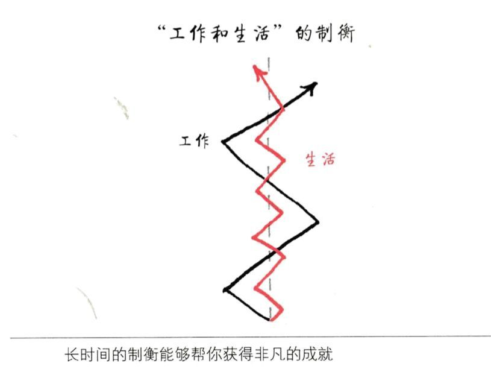

前几天，有给大学生，因为备战 国际大学生程序设计竞赛（ACM），废寝忘食，荒废其他课程，但还没用取得满意的突破，不知何去何从。
其实每个人在生活工作中，都会遇到类似的情况，在一个事情上投入太多，尚未有结果，还影响了其他事情。
那么这么纠结如何破呢？
首先，得肯定自己在一件事情上投入与努力，为自己的目标持续奋斗，这本身就是件了不起的时，已经可以超过了很多人了。
然后得看看，自己所做得事情，客观上的难度有多大，而自己与之的实际差距有多少，这样才能让自己平静，保持理智，不至于在纠结时，对自己过分否定。
针对这位朋友的问题，我从三个方面做了解答，期望也对其他读者有所启发。
如何突破
ACM 比赛是全球大学生计算机程序能力竞赛，不仅需要有卓越的能力，还需要全世界很多很厉害的人竞争，本身是一件很难的事情。
就竞赛而言，无论多难，都是有技巧的，在技巧的基础上，加上大量的刻苦训练，才是制胜的关键。
我们人类除了很少部分天才之外，绝大部分的智力水平是相差不多的。在相同的技巧面前，拼的就是长期的刻苦训练，形成肌肉记忆，体育项目是这样，创作领域是这样，编程领域也是这样。
那么有什么成长路径呢？
首先，需要掌握基础知识，比如一门趁手的编程语言、数据结构，以及一些基础算法。好的是这些都可以找到学习资料，通过自学掌握。
然后，找到一个好的 ACM 的培训团队，在专业老师的指导下，有计划地培训。找培训团队，还有个很重要都点是，会有一个共同努力的成长环境，这个群体效应，对一个人技能的成倍提升很必要的。
最近笔者在自学英语，自己坚持了一阵，很快就没了动力，后来报了个在线学习班，有老师指导，同学鼓励，学起来就轻松很多了，到现在几个月了，一天也没落过。
这个时候就能理解什么是：
付费就是捡便宜
这句话的含义了
最后，自己需要刻苦训练，因为
但凡有价值的事情，都需要持续的长期的努力才能有效果
如果没用持续的努力锻炼和打磨，再好的技巧和老师，也是无济于事的。
如何少走弯路
走弯路，是谁都不想做的事情，都想要速成，但是，对于像编程一样的技能来说，要避免走弯路，就是老老实实的，不怕被打击，不放弃的努力。
对于一个新技能来说，刚开始就是比较别扭，不舒服，甚至很困难，一不留神，就想回到过去的状态里。根据现代的脑科学研究成果，这是因为，对于新的概念，大脑中的神经元之间还没用建立起关联，建立关联需要时间和不断的重复，最后形成肌肉记忆。
像开车一样，熟练之后，会感觉，手长在方向盘上，脚长在油门和刹车上，甚至不需要主动指挥，就挥洒自如。
笔者开始学习 Python 时，也遇到了很大的阻碍，而且觉得不如之前的语言好，想要放弃，但坚持下来，才真正体会到了 Python 这个技能的好处，现在不但为公司创建了新的业务线，而且还给我创造了很多额外收入。
所以如何才能不走弯路呢？很简单就是持续的练习。
而你现在的状态就是这样的，能自主的勤练习，是成为强者的必经之路。
制衡
往往在专心做一件事时，会忽略其他事情，长时间的忽略，会造成生活的失衡。
说实话，能在一件事情上专注，是非常好的特种，是能成事的人最为显著的特征。
但是，我们每个人生来都不是自由的，都有各式各样的限制，需要遵守条件的约束。
比如在校大学生，那么学业是需要完成的（一般而言，但不排除特例）；再比如，很多人没用财务自由，必须为生活所需而打工，哪怕这个工作自己不喜欢。
其实，即使有再好的事业，生活也是必须要照顾好的。如何平衡呢？
平衡这个词，会让人想到将精力和时间平均分配到需要平衡的事情上，其实如果这么做了，将无法收获任何方面的成果，因为集中力量，才能取得大的成果，而大的成果会带来更好的生活和工作条件。
所以《最重要的事只有一件》中，用 制衡 来代替平衡。
就是围绕着最重要的事，对其他事情进行平衡，如下图：

黑线代表的是最重要的事情，会投入更多的时间和资源，红线代表的是其他需要保持平衡的事情，投入少的资源和精力。
更多信息可以参考《最重要的事只有一件》这本书。
以那位大学生的例子，失衡会导致挂科，为了不挂科，需要分配一些时间和精力给其他课程，而且大学里不想挂科，其实是很简单的，一般突击一两个星期就可以了，这样就能有更多的时间放在最重要的事情上了。
最后
当自己因为失衡而感到焦虑时，需要平复自己的情绪，用理性找到正确的路径，然后不受外界和内心干扰地持续努力，最终就会有好的结果，这几乎是非常确定的事情。
如果感觉心力不足，有点丧，要接纳自己，安慰自己，并做适当的调整，总之心里不能乱，不能急，要相信没有自己做不成的事，只是需要调整和休息一下。
期望这篇文章也对你有所启发，比心！